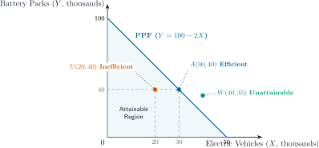
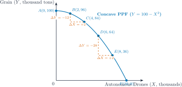
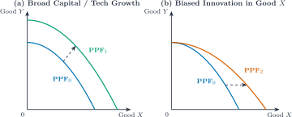
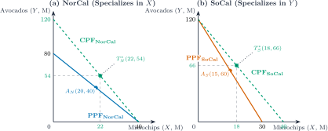

2 Chapter 2: The Production Possibilities Frontier & Gains from Trade
This chapter develops the Production Possibilities Frontier (PPF) as a foundational model of scarcity, productive efficiency, opportunity cost, and long-run economic growth. It then extends the framework to Ricardian comparative advantage, demonstrating how specialization and mutually beneficial Terms of Trade (\(TOT\)) expand a region’s Consumption Possibilities Frontier (\(CPF\)) strictly beyond its domestic production boundary.
Learning Outcomes and Key Terms
Upon completing this chapter, students should be able to:
- Construct and interpret a Production Possibilities Frontier (PPF) to distinguish productively efficient, inefficient, and unattainable output combinations.
- Calculate opportunity costs from linear equations and discrete production schedules, and explain why imperfect factor adaptability generates the Law of Increasing Opportunity Cost.
- Identify the drivers of outward PPF shifts (capital accumulation, labor growth, human capital, and technological progress).
- Distinguish absolute advantage from comparative advantage, establish valid Terms of Trade (\(TOT\)) bounds, and prove how trade shifts the Consumption Possibilities Frontier (\(CPF\)) outside the domestic PPF.
Key Terms: Production Possibilities Frontier (PPF), productive efficiency, allocative efficiency, Law of Increasing Opportunity Cost, Marginal Rate of Transformation (\(MRT\)), economic growth, absolute advantage, comparative advantage, specialization, Terms of Trade (\(TOT\)), Consumption Possibilities Frontier (\(CPF\)), autarky.
California possesses some of the most productive farmland, engineering talent, and venture capital in the world. Technically, California farms could grow coffee beans in climate-controlled greenhouses, and California factories could assemble every smartphone and laptop sold in the state. Yet California imports virtually all of its coffee from Latin America and consumer electronics from East Asia, while exporting almonds, wine, software, and advanced semiconductor designs. The Production Possibilities Frontier and the principle of comparative advantage explain why doing everything yourself—even when you are good at it—makes everyone poorer.
2.1 Scarcity, Productive Efficiency, and the PPF Model
Conceptual Introduction
In Chapter 1, we saw how an individual student allocates a fixed weekly budget between two goods. Now we zoom out to an entire economy. Every society faces scarcity: its productive inputs—land and natural resources, labor hours, physical capital (machinery, factories, servers), and entrepreneurial ability—are finite at any moment in time. Because resources are limited, producing more of one good requires diverting inputs away from producing something else. Economists capture this fundamental trade-off with the Production Possibilities Frontier (PPF), a curve showing the maximum combinations of two goods or services an economy can produce when all available resources are fully employed using current technology (holding resource supplies and technology fixed, ceteris paribus).
The PPF divides all conceivable production bundles into three distinct zones. Any combination lying on the frontier represents productive efficiency: the economy is squeezing the maximum possible output from its existing inputs, so it is impossible to produce more of one good without giving up some of the other. Any combination lying inside the frontier is attainable but productively inefficient, meaning resources are sitting idle (such as unemployed workers during a recession) or are misallocated across industries. Finally, any combination lying outside the frontier is currently unattainable given existing factor supplies and technology.
Crucially, reaching the frontier is only half of the economic problem. While every point on the PPF is productively efficient, society must still choose which specific point along the curve best satisfies human wants—a criterion known as allocative efficiency. Moving from one efficient point on the PPF to another requires paying an explicit opportunity cost: the quantity of Good \(Y\) that must be forgone to obtain additional units of Good \(X\).
- Productive Efficiency means operating on the PPF—producing goods at the lowest possible resource cost without wasting inputs. Every point on the PPF is productively efficient.
- Allocative Efficiency means choosing the single point on the PPF that society values most (where marginal benefit equals marginal cost, \(MB = MC\)). An economy producing millions of unwanted cassette tapes at full capacity is productively efficient, yet allocatively inefficient.
Visual Representation
Figure 1 illustrates a simplified linear Production Possibilities Frontier for an economy allocating fixed resources between Electric Vehicles (\(X\)) and Grid Battery Packs (\(Y\)), under the simplifying assumption that resources are equally adaptable between both industries (generating a constant opportunity cost).

California’s Central Valley illustrates a concrete PPF trade-off between utility-scale solar power generation and irrigated specialty agriculture (such as almonds, tomatoes, and pistachios). Both activities compete for flat, sun-drenched acreage, senior water allocations, and high-voltage transmission interconnection capacity. During drought years or transmission bottlenecks, idling farmland without installing solar panels leaves the regional economy at an interior point like \(U\), forfeiting both farm output and clean electricity. Conversely, converting retired agricultural acreage into solar-plus-storage installations moves the region along its frontier toward higher clean-energy output, whereas simultaneously expanding irrigated acreage and solar capacity beyond available water and grid limits (point \(W\)) is physically impossible without new desalination or transmission infrastructure.
Mathematical Foundation
When resources are equally suited to producing both goods, the PPF is a straight line with a constant slope. Suppose an economy’s resource constraint between Electric Vehicles (\(X\), in thousands) and Battery Packs (\(Y\), in thousands) is given by:
\[ 2X + Y = 100 \quad \Longleftrightarrow \quad Y = 100 - 2X \]
Here, the vertical intercept (\(X = 0 \implies Y = 100\)) shows maximum battery production (\(100\) thousand packs), and the horizontal intercept (\(Y = 0 \implies X = 50\)) shows maximum vehicle production (\(50\) thousand vehicles). The magnitude of the slope measures the constant opportunity cost of producing \(1\) additional unit of \(X\):
\[ \text{Opportunity Cost of } 1X = \left|\frac{\Delta Y}{\Delta X}\right| = 2 \text{ battery packs per electric vehicle} \]
(Equivalently, \(2\) thousand battery packs per thousand electric vehicles.) Conversely, gaining \(1\) battery pack requires sacrificing \(\frac{1}{2} = 0.5\) electric vehicles.
2.2 The Law of Increasing Opportunity Cost and Economic Growth
Conceptual Introduction
While a straight-line PPF is useful for building intuition, real-world production frontiers bow outward—meaning they are concave to the origin. This curvature reflects the Law of Increasing Opportunity Cost: as an economy expands production of one good, the opportunity cost of producing each additional unit rises. Why does this happen? Productive resources are not identical; they exhibit imperfect factor adaptability. Certain parcels of land, specialized machines, and worker skill sets are naturally suited to one industry and poorly suited to another.
When an economy begins shifting resources out of Good \(Y\) (say, agricultural grain) and into Good \(X\) (say, autonomous drones), rational managers first reassign the inputs best adapted to drone manufacturing—such as robotics engineers and precision electronics technicians—while leaving fertile farmland untouched. Initially, drone output rises substantially while grain output barely dips. However, as drone production expands further, the economy must pull in workers and land progressively less suited to aerospace assembly and far more productive in farming, causing the grain sacrificed per additional drone to escalate sharply.
Over longer time horizons, the PPF is not static. Economic growth occurs when an economy expands its productive capacity, shifting the entire PPF outward so previously unattainable bundles become feasible. Four primary forces drive outward PPF shifts: (1) physical capital accumulation (building new factories, power grids, and computing clusters), (2) labor force growth, (3) human capital investment (education, vocational training, and public health), and (4) technological innovation that raises total factor productivity. Notably, an economy that devotes a larger share of current resources to capital goods rather than immediate consumption will experience faster outward PPF expansion in future years.
- Moving from Inside the PPF Toward the Frontier represents short-run recovery—putting unemployed workers and idle factories back to work. The economy’s productive capacity has not expanded; utilization has simply improved.
- Shifting the Entire PPF Outward represents long-run economic growth—expanding the economy’s maximum productive potential through new capital, a larger or better-trained workforce, or improved technology.
Visual Representation
Figure 2 shows how equal \(2\)-thousand-unit increases in drone production (\(X\)) require progressively larger sacrifices of grain (\(Y\)) along a bowed-out PPF. Figure 3 contrasts a broad outward expansion from economy-wide capital and technology growth with a sector-biased technological breakthrough in Good \(X\).


Rapid expansion of artificial intelligence infrastructure illustrates both increasing opportunity cost in the short run and outward frontier shifts in the long run. Semiconductor cleanrooms, high-bandwidth memory fabs, and electrical transformers cannot be built overnight. Reallocating existing wafer capacity and electrical engineers from smartphones and automotive chips into AI server clusters initially taps flexible capacity, but pushing further forces manufacturers to cannibalize specialized industrial lines—sharply driving up the opportunity cost of each additional server rack. Over a multi-year horizon, however, constructing new fabrication plants, training electrical engineers, and deploying next-generation chip lithography expands the economy’s overall capacity, shifting \(\text{PPF}_0\) outward to \(\text{PPF}_1\).
Mathematical Foundation
Table~\(\ref{tab:increasing_oc}\) records the discrete production schedule plotted in Figure 2, generated by the concave frontier \(Y = 100 - X^2\) for \(0 \le X \le 10\) (where \(X\) is measured in thousands of drones and \(Y\) in thousand tons of grain). Over any discrete interval from \((X_1, Y_1)\) to \((X_2, Y_2)\), the per-unit opportunity cost of Good \(X\) is:
\[ \text{Per-Unit Opportunity Cost of } X = \left|\frac{\Delta Y}{\Delta X}\right| = \frac{|Y_2 - Y_1|}{X_2 - X_1} \]
Because both the numerator (\(\Delta Y\), thousand tons) and denominator (\(\Delta X\), thousand drones) are measured in thousands, the factor of \(1{,}000\) cancels, giving the opportunity cost directly in tons of grain per drone.
2.3 Specialization, Ricardian Comparative Advantage, and Gains from Trade
Conceptual Introduction
If every household or region tried to produce everything it consumed in isolation—a state economists call autarky—consumption would be strictly trapped on or inside its own domestic PPF. Yet in reality, individuals, regions, and nations specialize in a narrow range of activities and trade for everything else. Economist David Ricardo proved in 1817 that trade creates mutual gains not because one partner is better at everything, but because trading partners differ in their relative opportunity costs.
To see why, we must separate two concepts that people frequently confuse. A producer has an absolute advantage in a good if it can produce more total output of that good using the same resources (or the same output using fewer inputs). By contrast, a producer has a comparative advantage in a good if it can produce that good at a lower domestic opportunity cost than its trading partner. Because opportunity cost is a ratio (\(\left|\Delta Y / \Delta X\right|\)), it is mathematically impossible for one producer to have a comparative advantage in both goods unless their domestic opportunity costs are identical.
When each region specializes in the good where it holds a comparative advantage and trades at a mutually agreed exchange price—the Terms of Trade (\(TOT\))—both partners can consume combinations of goods that lie strictly outside their domestic PPFs. In graphical terms, specialization and trade pivot a region’s Consumption Possibilities Frontier (\(CPF\)) outward above its autarky PPF, generating net welfare gains for both sides. (The standard Ricardian model makes three simplifying assumptions: constant domestic opportunity costs along linear PPFs, full employment of resources in both regions, and zero transportation or tariff costs.)
Mutually beneficial trade occurs if and only if the Terms of Trade (\(TOT\), expressed as units of Good \(Y\) exchanged per \(1\) unit of Good \(X\)) settle strictly between both regions’ domestic opportunity costs:
\[ \left|\frac{\Delta Y}{\Delta X}\right|_{\text{Exporter of } X} < TOT < \left|\frac{\Delta Y}{\Delta X}\right|_{\text{Importer of } X} \]
Even if a high-productivity nation holds an absolute advantage in every single industry (producing more output per worker in both \(X\) and \(Y\)), it still gains from trade by specializing in the sector where its productivity edge is largest—and therefore its domestic opportunity cost is lowest.
Visual Representation
Figure 4 illustrates Ricardian specialization and gains from trade between two regions—NorCal and SoCal—producing Microchips (\(X\)) and Avocados (\(Y\)). By specializing in its comparative-advantage good and trading at \(TOT = 3\) million crates of avocados per million microchips, each region reaches a post-trade consumption bundle (\(T^*\)) strictly beyond its domestic autarky frontier.

Modern semiconductor production splits cleanly along comparative advantage lines. Silicon Valley engineering clusters possess deep ecosystems of chip architects and electronic design automation (EDA) software, giving them a low opportunity cost in logic and AI processor design. Meanwhile, East Asian manufacturing hubs possess dense networks of precision cleanrooms, substrate suppliers, and assembly technicians, giving them a much lower opportunity cost in wafer fabrication and advanced chip packaging. Rather than each region attempting to build an isolated end-to-end supply chain in autarky, firms design chips in California, fabricate and package them abroad, and trade completed processors—expanding global computing power far beyond what either region could achieve alone.
Mathematical Foundation
Consider two regions, NorCal and SoCal, each with fixed annual resources capable of producing Microchips (\(X\), in millions) and Avocados (\(Y\), in millions) along linear PPFs:
- NorCal PPF: \(Y = 80 - 2X\) (maximum \(40\text{M}\) chips if \(Y = 0\), or \(80\text{M}\) crates of avocados if \(X = 0\)).
- SoCal PPF: \(Y = 120 - 4X\) (maximum \(30\text{M}\) chips if \(Y = 0\), or \(120\text{M}\) crates of avocados if \(X = 0\)).
Returning to our opening question: California does not grow its own coffee or assemble every laptop because doing so would force the state to pull scarce land, water, and engineering talent out of sectors where its comparative advantage is highest. By specializing in high-value agriculture, software, and chip design and trading with partners that have lower relative opportunity costs in coffee cultivation and hardware assembly, California pushes its Consumption Possibilities Frontier outward—obtaining more total goods than autarky could ever deliver.
Check Your Understanding
Conceptual: Explain why an economy operating inside its PPF does not face an opportunity cost when expanding production of both goods simultaneously, whereas an economy operating on its PPF always faces an opportunity cost.
Linear PPF Analysis: An economy’s PPF between Cloud Servers (\(X\)) and Medical Scanners (\(Y\)) is given by \(Y = 60 - 3X\).
What is the opportunity cost of producing \(1\) Cloud Server? What is the opportunity cost of producing \(1\) Medical Scanner?
Determine whether bundles \((12, 24)\), \((10, 25)\), and \((15, 20)\) are efficient, inefficient, or unattainable.
Comparative Advantage & Trade: Country Alpha can produce either \(50\) tons of Steel (\(X\)) or \(100\) tons of Wheat (\(Y\)) along a linear PPF. Country Beta can produce either \(40\) tons of Steel (\(X\)) or \(40\) tons of Wheat (\(Y\)) along a linear PPF.
Which country has the absolute advantage in Steel? Which has the comparative advantage in Steel?
State the range of mutually beneficial Terms of Trade (\(TOT\)) for \(1\) ton of Steel in terms of Wheat.
If both countries specialize completely and trade \(18\) tons of Steel for \(27\) tons of Wheat (\(TOT = 1.5\)), calculate each country’s post-trade consumption bundle and compare it to autarky bundles \(A_{\text{Alpha}}(15, 70)\) and \(A_{\text{Beta}}(20, 20)\).
Worked Solutions
- Inside the PPF, idle or misallocated resources exist; putting unemployed inputs to work increases output of both goods without requiring sacrifices elsewhere. On the PPF, all resources are fully and efficiently employed, so expanding one sector requires withdrawing inputs from the other.
- (a) \(\text{OC}_{1X} = 3\) Medical Scanners; \(\text{OC}_{1Y} = \frac{1}{3}\) Cloud Servers. (b) At \(X = 12\), \(Y_{\max} = 60 - 3(12) = 24 \implies (12, 24)\) is efficient; at \(X = 10\), \(Y_{\max} = 30 > 25 \implies (10, 25)\) is inefficient; at \(X = 15\), \(Y_{\max} = 15 < 20 \implies (15, 20)\) is unattainable.
- (a) Alpha has absolute advantage in both (\(50 > 40\) Steel; \(100 > 40\) Wheat). Opportunity cost of \(1\) Steel: Alpha \(= \frac{100}{50} = 2\) Wheat; Beta \(= \frac{40}{40} = 1\) Wheat. Beta has comparative advantage in Steel (\(1 < 2\)), and Alpha has comparative advantage in Wheat (\(0.5 < 1\)). (b) \(1\text{ ton Wheat} < TOT_{1\text{ Steel}} < 2\text{ tons Wheat}\). (c) Beta specializes in Steel \((40, 0)\), exports \(18\) Steel for \(27\) Wheat, and consumes \((22, 27)\)—gaining \(+2\) tons of Steel and \(+7\) tons of Wheat over autarky \((20, 20)\), and lying \(9\) tons of Wheat outside Beta’s autarky PPF (\(Y_{\text{PPF}}(22) = 40 - 22 = 18 < 27\)). Alpha specializes in Wheat \((0, 100)\), exports \(27\) Wheat for \(18\) Steel, and consumes \((18, 73)\)—gaining \(+3\) tons of Steel and \(+3\) tons of Wheat over autarky \((15, 70)\), and lying \(9\) tons of Wheat outside Alpha’s autarky PPF (\(Y_{\text{PPF}}(18) = 100 - 2(18) = 64 < 73\)).